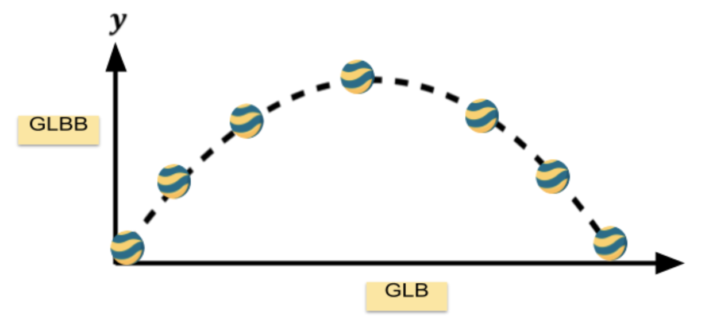
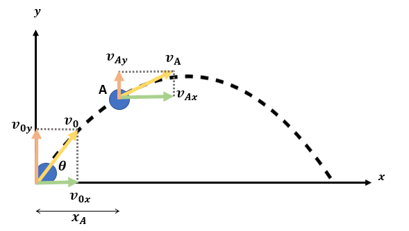

Gerak parabola adalah gerak suatu benda dengan lintasan dua dimensi dan salah satu dimensinya membentuk sudut pada salah satu koordinat kartesius.
Sebuah benda yang ditembakkan (proyektil) dengan sudut elevasi dan kecepatan awal v0 akan bergerak dengan lintasan berbentuk parabola yang disebabkan oleh adanya percepatan gravitasi g.
Komponen kecepatan saat pada sumbu x
v0x = v0 cosθ
Komponen kecepatan saat pada sumbu y
v0y = v0 sinθ
Komponen kecepatan ini berlaku apabila diasumsikan tidak ada gesekan udara dengan proyektil
Kecepatan proyektil setiap saat terhadap sumbu x
vx = v0 cosθ
Kecepatan proyektil pada waktu t terhadap sumbu y
vy = v0y - gt
vy = v0 sinθ - gt
Jarak yang ditempuh oleh proyektil pada waktu t terhadap sumbu x
x = vx t
x = v0 cosθ t
Ketinggian yang dicapai oleh proyektil pada waktu t terhadap sumbu y
y = v0y t -
| 1 |
| 2 |
gt2
y = v0 sinθ t -
| 1 |
| 2 |
gt2
Jarak maksimum adalah jarak yang ditempuh proyektil dari awal bergerak hingga berhenti bergerak. Pada saat proyektil mencapai jarak tempuh maksimum (xmaks) maka ketinggiannya akan minimum (y = 0). Maka persamaan jarak tempuh terhadap sumbu y menjadi:
Waktu untuk mencapai jarak maksimum (txmaks)
0 = v0 sinθ t -
| 1 |
| 2 |
gt2
txmaks =
| 2v0 sinθ |
| g |
Bila persamaan waktu di atas disubstitusikan ke dalam persamaan jarak terhadap sumbu x, maka diperoleh:
Jarak maksimum (xmaks)
x = v0 cosθ t
x = v0 cosθ (
| 2v0 sinθ |
| g |
) =
| 2v02 sinθ cosθ |
| g |
xmaks =
| v02 |
| g |
sin 2θ
Tinggi maksimum adalah posisi benda pada titik tertinggi terhadap sumbu y. Komponen kecepatan sesaat proyektil terhadap sumbu y mencapai nilai minimum (vy=0) saat tinggi proyektil mencapai nilai maksimum. Sehingga dapat dihitung waktu yang dibutuhkan oleh proyektil untuk mencapai ketinggian dan jarak maksimum adalah:
Waktu yang dibutuhkan untuk mencapai tinggi maksimum (tymaks)
vy = v0 sinθ - gt
0 = v0 sinθ - gtymaks
tymaks =
| v0 sinθ |
| g |
Waktu yang dibutuhkan untuk mencapai jarak maksimum (txmaks)
txmaks = 2tymaks
Kemudian, dari rumus waktu tersebut, kita dapat mencari ketinggian maksimum proyektil dengan cara mensubstitusikan variabel tymaks pada persamaan jarak pada sumbu y, sehingga:
Tinggi maksimum (ymaks)
y = v0 sinθ t -
| 1 |
| 2 |
gt2
y = v0 sinθ (
| v0 sinθ |
| g |
) -
| 1 |
| 2 |
g (
| v0 sinθ |
| g |
)2
ymaks =
| v02 sin2θ |
| 2g |